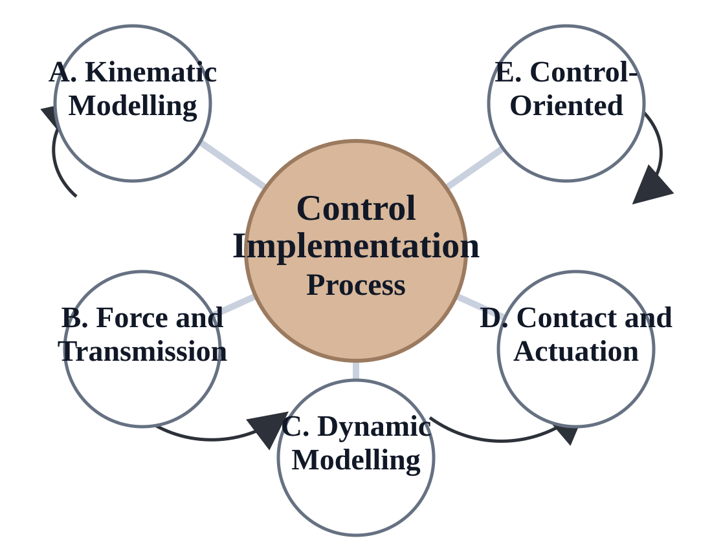
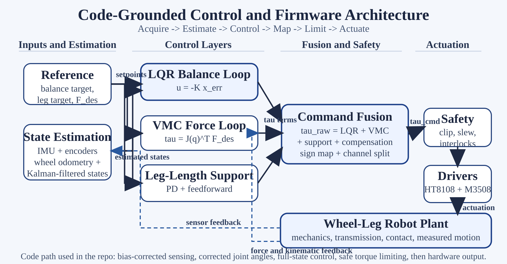

Bipedal Wheel-Leg Robot for RoboMaster
Poster overview built from the ASI-405 second-half report, MATLAB modelling files, and firmware explanation files.
200 mm
target obstacle height from the design summary
3.76
selected wheel gear ratio after speed/acceleration trade-off
1500 N
design load per leg used in structural checks
Mechanical System Context

Final wheel iteration showing the hubless packaging, custom bearing concept, and the integrated wheel-leg module.
- The wheel was enlarged from the early 14-inch concept to a 16-inch package so the linkage and drivetrain could fit inside the open center.
- A V-groove bearing plus eccentric preload was used to keep the inner and outer structures concentric without an expensive off-the-shelf large bearing.
- The tyre rim was redesigned for simple CNC manufacture while still matching the bearing path and tyre seating geometry.
- Mass reduction was checked against a conservative jump-load case, which set the structural design target at 1500 N per leg.
Control Implementation Process

A. Kinematic Modelling
Forward kinematics, inverse kinematics, and Jacobian mapping define how the leg geometry becomes a controller state.
B. Force and Transmission
Force-to-torque mapping is tied to the chosen gear and chain ratios before torque ever reaches the real hardware.
C, D, and E Combined
Reduced-order dynamics, contact assumptions, actuator limits, LQR balance, VMC, and leg support are fused into one runtime torque path.
Firmware Hooks from the Code
IMU Processing
imu_processing_pipeline.c applies bias correction and flips the firmware pitch sign into the model sign used by the controller.
Kalman Estimation
kalman_body_state_estimator.c smooths body translation states so the balance loop sees usable x and vx signals.
Joint Zero Offsets
runtime_joint_zero_offset.c converts raw encoder angles into corrected joint angles before FK, IK, LQR, and VMC use them.
Sign Alignment
sign_convention_alignment_check.c checks that pitch, pitch-rate, wheel speed, and the exported K-matrix follow one consistent direction convention.
Safe Output
torque_saturation_output_limit.c and over_tilt_safety_cutoff.c clip torque commands and force zero output when tilt exceeds the safety limit.
Control and Firmware Architecture

Outer loop: full-state LQR balance from the reduced model
Inner loop: VMC endpoint force shaping through the Jacobian transpose
Support loop: leg-length PD plus feedforward before final channel mapping
This simplified poster version keeps the same story as the report and code: sensed states are corrected, fused, turned into LQR and VMC torque requests, then mapped through sign checks, limits, and driver interfaces before they reach the wheel-leg plant.

Hubless Big Wheel
The large open wheel radius improves obstacle capability while keeping the center free for linkage and drivetrain packaging.

V-Groove Bearing Path
The custom bearing stack adds radial guidance, axial retention, and assembly preload without a heavy commercial ring bearing.

Custom Tyre Rim
The rim profile was shaped for tyre seating, bearing compatibility, and low-cost 3-axis CNC manufacture.

Integrated Wheel-Leg Assembly
The final CAD brings the wheel module, linkage, chassis structure, and actuator packaging into one compact control-ready platform.